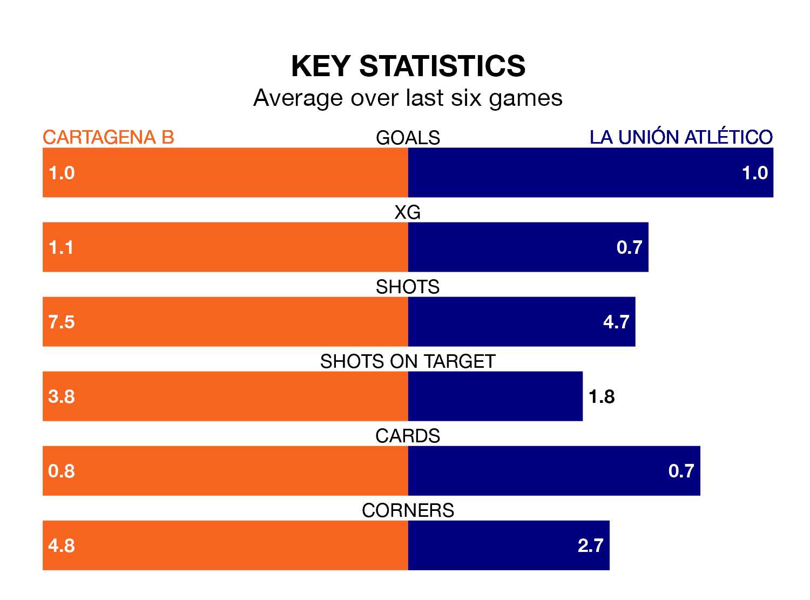

Sunday's match sees two relegation candidates play each other, as bottom of the table Cartagena B host 15th-placed La Unión Atlético.
Cartagena B have picked up 18 points from their first 18 Segunda División RFEF Group 4 games, with three wins and nine draws.
That is nine points less than la Unión Atlético have collected, having won eight and drawn three.
In the last 10 years, Cartagena B and La Unión Atlético have played each other on eight occasions. They won three each, and they drew twice.
On average, Cartagena B scored 1.2 goals and la Unión Atlético 1.5 in those matches.
Their last meeting was on October 28, when La Unión Atlético won 3-1 at home.
With 20 goals in 25 games so far this season, Cartagena B are scoring at below the league average rate with 0.8 goals per game. And they are conceding more than average, letting in 37 goals at a rate of 1.5 per game.
La Unión Atlético, meanwhile, are average scorers, with 1.0 goal per game. They have conceded 1.2 goals per game.
The hosts are in mixed form in the Segunda División RFEF Group 4, with one win and four draws from their last six games.
With two wins and two draws over that period, la Unión Atlético's form is slightly better – they have taken eight points from 18, compared to Cartagena B's seven.
Cartagena B's last match was on March 3, a 0-0 draw against Antoniano.
La Unión Atlético drew 0-0 with Orihuela CF last time out, also on March 3.
Updated: 09:34 (UTC), 08/03/24